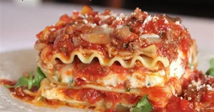

Easy lasagna recipe

Description
Great tasting lasagna,that is easy to make.
You can make any stage of the lasagna a day in advance, or make the
lasagna and refrigerate overnight before cooking - the flavours will only
develop more the longer you leave it.
The longer you leave the ragu to simmer the better it will taste. Aim for
3 hours if you have time.
Ingredients
- 2 tbsp olive oil
- 1 onion
- 1 carrot
- 1 stick of celery
- 750g beef mince
- 130g pancetta
- 2 cloves of garlic
- 1 beef stock cube
- 1 sprig of rosemary
- 1 glass white wine
- 1 can chopped tomatoes
- 2 tbsp tomato puree
Steps
-
For the ragu: Heat the oil in a large pan and then add the vegetables
and leave to fry for 5 minutes until softened and beginning to colour.
-
Add the mince and pancetta and fry for a minute or two then add the
garlic, stock and rosemary and cook until the meat has browned on all
sides.
-
Add the white wine and simmer until slightly reduced before adding the
tomatoes and tomato puree.
-
Leave to simmer either on a low heat on the hob or in a preheated over
at 160C for at least 1.5-2 hours.
-
For the béchamel: heat the milk and bay leaf until it begins to simmer
and then remove from the heat and set aside.
-
In a separate pan, melt the butter over a medium heat and then add the
flour to make a roux then add the milk (slowly at first) whilst stirring
constantly.
-
When you've added all of the milk, continue to stir over heat for about
15 minutes until the sauce becomes really thick.
-
Remove the bay leaf, season with black pepper and grate in the nutmeg to
taste - I like to give it a really good grating.
-
Mix in the egg yolks, then parmesan and remove from the heat and allow
to cool.
-
For the layers Grease a square baking dish (mine was 26x26cm) and add
two sheets of lasagna.
-
Cover the lasagna with a layer of ragu and then cover that with a layer
of béchamel.
-
Repeat the process until you're out of ragu. If you've got the
thicknesses right then you should have enough for 4 decent layers.
-
Top with a final layer of pasta, béchamel and then sprinkle over the
remaining cheese.
-
Bake in a fan oven at 160C for 45-55 minutes until the cheese is
bubbling and golden brown